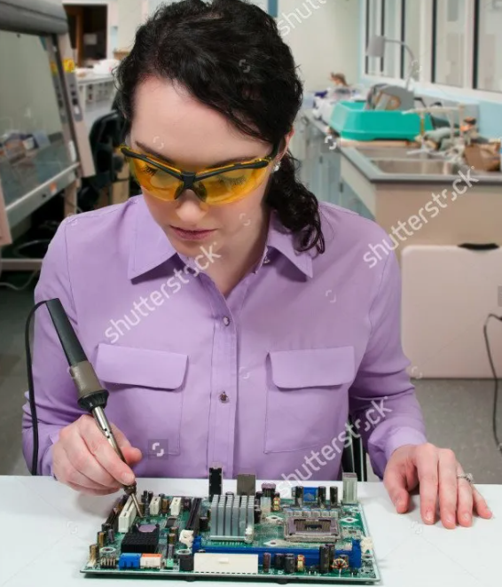
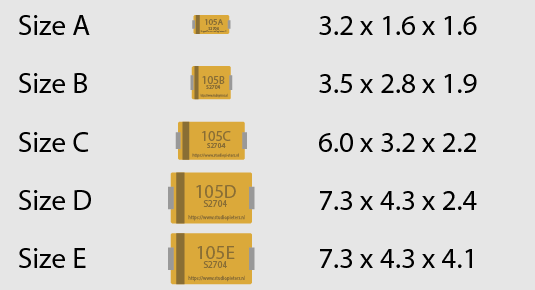
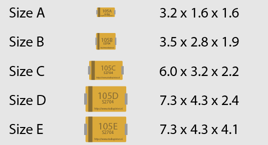

Taller de soldadura avanzada
Gonzalo Avila · gzalo.comPrecauciones
Soldar no es tan peligroso comparado con otros hobbies, pero...
El estaño que usamos tiene plomo.
Importante: lavarse las manos después de soldar
Vapores
El plomo es pesado, no hay problema con sus vapores
Salvo que soldemos con soplete
Vapores
La resina/flux genera la mayor parte del humo que vemos
Es tóxica y puede irritar el sistema respiratorio, causar dolores de cabeza, mareos
- Trabajar en un área ventilada o extractores con filtros
- Siempre ubicarse al costado de la placa, no arriba
- Usar estaño sin plomo preferentemente
- Dejar bien cerrados los solventes
Temperatura
El soldador está muy caliente
Si nos quemamos: agua fría por 15 minutos
Temperatura

- Usar pinzas/morsas para agarrar placas y componentes
- Siempre dejar el soldador en su soporte y revisar el cable
- Apagar el soldador después del uso
- Tener a mano un matafuegos
Riesgos varios
El flux puede escupir: recomendable usar anteojos
Atención al soldar cables con tensión (tipo resorte)
Cuidado al soldar placas energizadas (el soldador está a tierra)
Tips de limpieza
- Punta sucia o sin estaño → transfiere mal el calor
- No usar abrasivos salvo casos extremos
- Usar esponja vegetal, limpiador de punta o viruta de bronce
- La esponja no debe estar ni muy húmeda ni muy seca
- Guardarlo limpio, y siempre agregar estaño antes de usarlo
Tips de limpieza
Usar otro soldador para derretir plásticos, termocontraíbles y calentar insertos roscados
No hacer fuerza con la punta, ni usar más calor del necesario
Encapsulados típicos
Pasivos
Resistencias, capacitores, inductores
1206, 0805, 0603, 0402
Diodos
- MELF / LL-41
- SOD (323/123)
Transistores y reguladores
- SOT
Capacitores polarizados
- Tantalio

- Aluminio

Circuitos integrados
Técnicas para soldar
- Soldador tipo lápiz (30 a 40 W es suficiente)
- Punta limpia, sin escoria/resina quemada
- Temperatura correcta si podemos regularla (380 ºC)
- Estaño fino (0.7 mm o menos), con o sin plomo
- Resina adicional si es necesario
Forma profesional: con horno o plancha caliente
Se usa un stencil para ubicar pasta de soldar (estaño+flux)
Se ubican los componentes: pick and place
Se calienta la placa siguiendo una curva de temperatura
Drag soldering
- Controlar la punta limpia, sin escoria/flux quemado
- Alinear encapsulado, soldar un pin, luego el opuesto
- Agregar estaño formando una gota (siempre se puede sacar)
- Arrastrar la gota perpendicularmente a los pines
- Agregar más flux si es necesario
Inspección
Usar una lupa o microscopio para revisar:
- El encapsulado bien alineado
- Cortocircuitos o bolas de estaño
- Pines bien soldados (intentar moverlos con un alfiler)
Algunos encapsulados requieren rayos X para validarlos
Técnica para desoldar (SMD)
- Utilizar malla de desoldar, NO chupaestaño:
- Usarla para pequeños cambios, no para desoldar componentes completos (para eso pistola de calor)
- Siempre agregar resina adicional ya que hay distintas calidades de malla
- No empezar por el borde
- Para desoldar encapsulados pequeños sin estación, agregar mucho estaño a todos los pines y calentar todo junto
- Para desoldar encapsulados particulares hay puntas especiales (más grandes o con formas)
- Verificar que queden los pads planos si se va a cambiar el chip
Técnica para desoldar (THT)
- Mejor usar estaño con baja temperatura de fusión
- Agregar un alambre de cobre tocando los pines para mantener todo caliente
- Para evitar levantar pistas, no hacer fuerza hasta que todas las conexiones estén líquidas
- Si el estaño no se derrite, agregar estaño nuevo
- Usar chupaestaño con tubo de silicona (o integrado con soldador)
Técnica para desoldar (General)
- No forzar las cosas → derretir el estaño puede tardar varios minutos dependiendo de la temperatura ambiente y el tamaño del encapsulado
- Si no hace falta recuperar el componente → cortar con cutter los pines y luego sacar pin a pin
- Para no quemar otros componentes → usar cinta Kapton
- Agregar calentador (100ºC) por debajo de la placa para precalentarla
¡A practicar!
soldadura.gzalo.com
Fuentes
- Woz con estaño
- How to clean Soldering Tip
- Ejemplo de pasta de soldar y stencil
- Gente agarrando el soldador de la punta: Shutterstock
- Componentes SMD volando
- Soldador al rojo vivo
- SMD reference sheets
Presentación bajo Creative Commons Attribution-NonCommercial 4.0 International License (excepto imágenes y videos)